来源：https://ii2nqsn27p.feishu.cn/docx/EmlmdjsjloITDKxrltdc1dr5nxe
生财的圈友们，大家好！我叫成成，我目前在做摆摊自媒体项目，摆摊的同时拍摄短视频卖小吃配方。并且目前，我们做的几个小吃品类，都做到了单个品类培训账号的头部。
24年，我们做的提拉米苏项目，发布26个视频，累计播放量一亿五千万（自然流），变现55W＋。
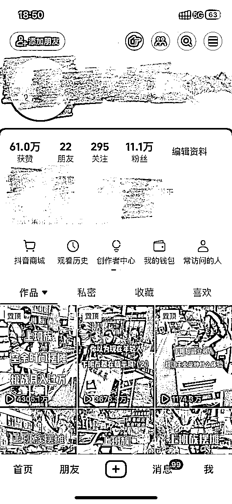
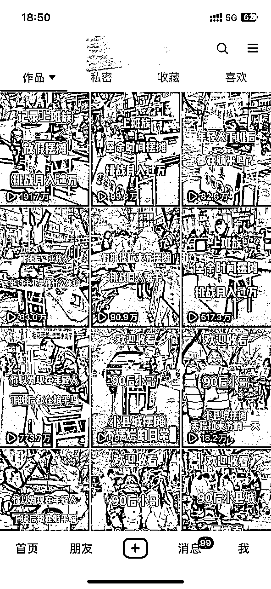
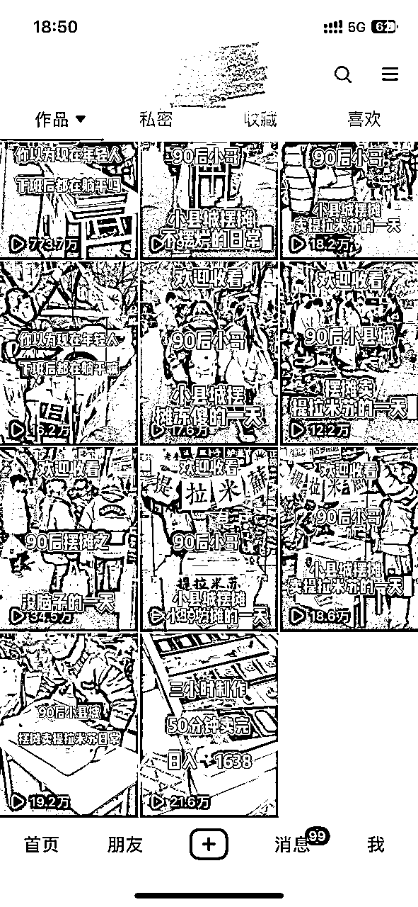
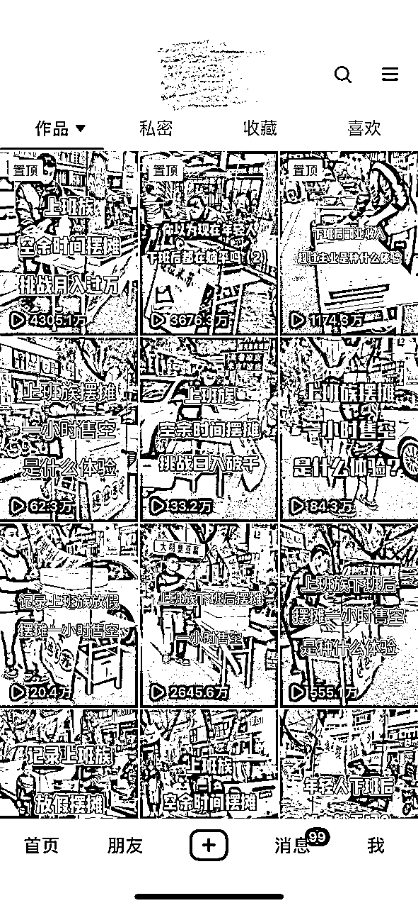
25年我们又换了一个的新品类，首条作品播放量就突破了500万（自然流），单条作品变现6W+。
因为看中了摆摊自媒体发展的潜力，之后的几年时间，我打算持续深耕在这个赛道，也欢迎同样看好这个赛道的圈友一起交流。
最初会选择摆摊赛道，是因为我偶然发现了，摆摊类视频在各个平台都非常有流量。有一段时间，我经常能刷到摆摊类视频的爆款。所以我本人也开始尝试摆摊拍视频，没想到我拍摄的第一个摆摊视频，就破了百万播放量。
还荣幸的被生财的圈友发现，发布在了生财风向标里。
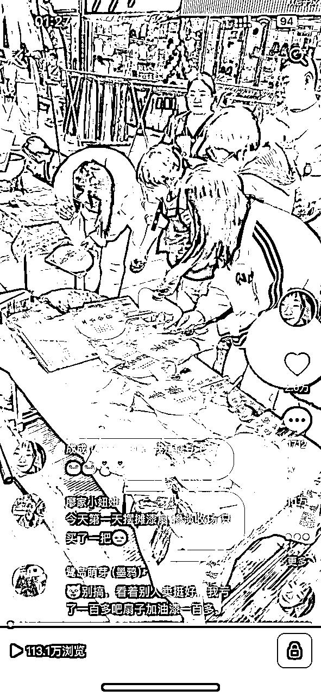
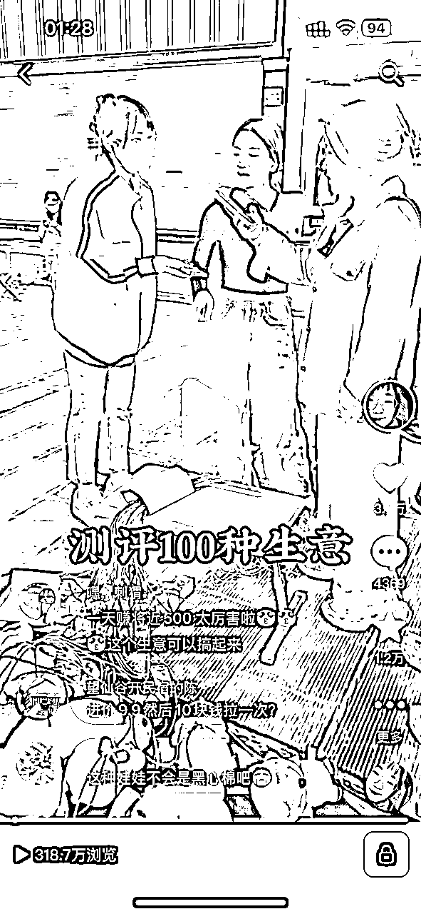
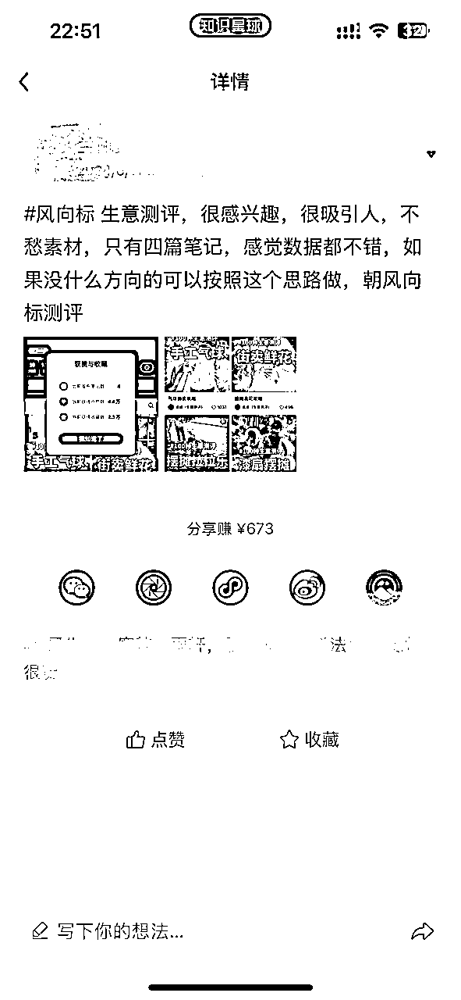
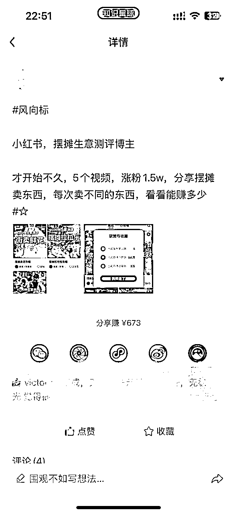
我还在生财平台里分享过自己拍摄摆摊视频的一些干货，不知道有没有看过我分享文章的圈友。
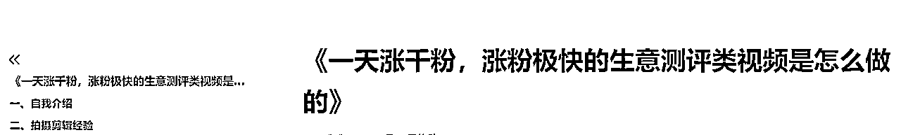
在发现摆摊类视频的巨大机会后，我就开始思考这类视频变现最快的方法，后来我锁定了小吃培训行业，并且用了一年的时间也拿到了结果，摸透了这个行业，今天就给大家分享一下，我从事摆摊小吃培训一年时间收获的经验。
在分享干货之前，先跟大家介绍一下。我叫成成，是抖音最早的一批本地生活博主。
我是21年开始做本地生活的，因为我做的时间比较早，那个时候竞争者不多，所以在本地生活早期那段时间，在本地这个赛道里，我的账号流量可以说是非常好的了，当时我的每一条视频，都能做到几十万，上百万的播放量，我也有幸，吃到了本地生活的早期红利，赚到了人生第一桶金。
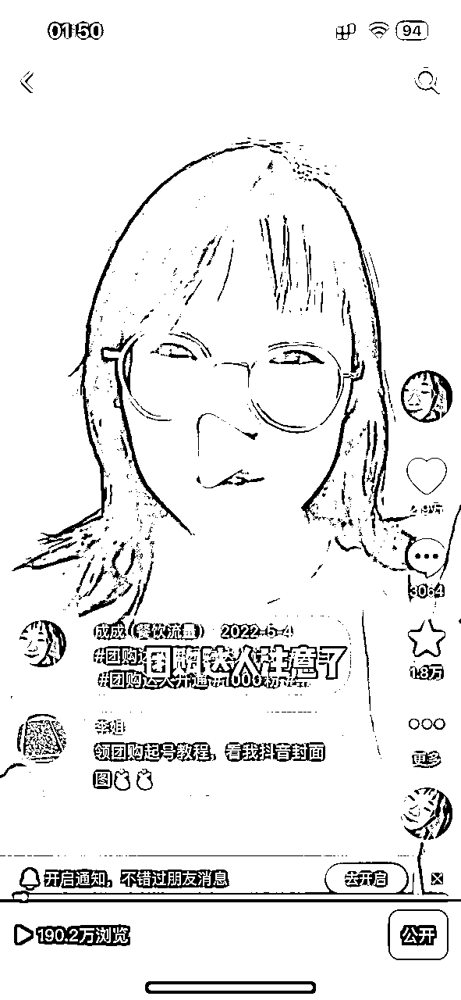
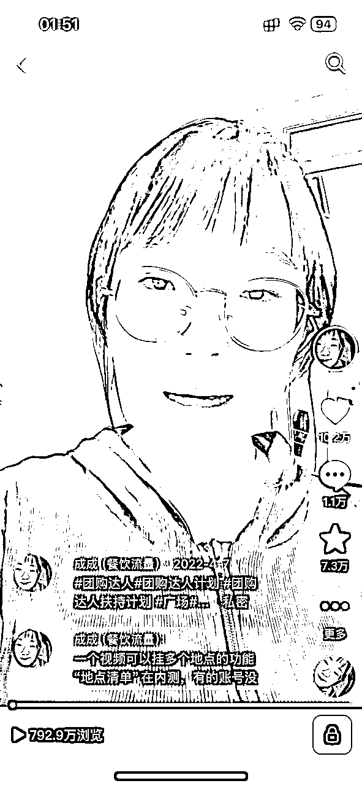
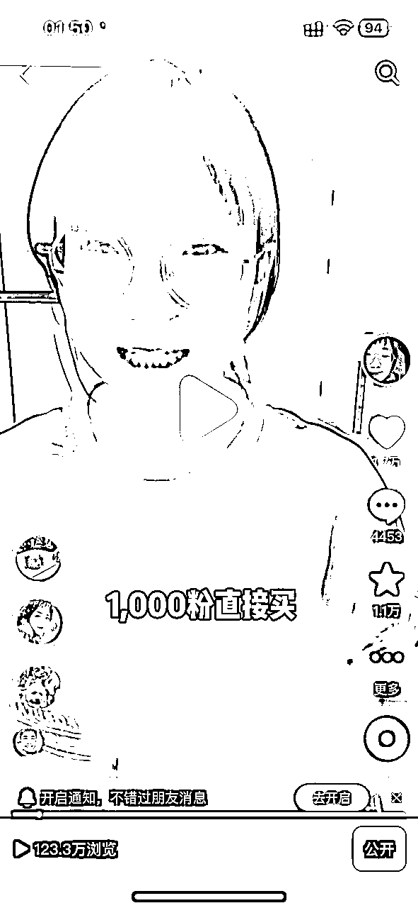
如果是前两年早一点加入生财，我肯定会给大家分享一下我做本地生活的一些经验。但是如今，本地生活已经不再有之前的流量和机会了，这也是我转行摆摊培训行业的原因之一。
目前我已经成功把之前做本地生活而且停更两年的口播账号，转型为摆摊类口播账号，并且流量还不错，如果有账号转型困扰的圈友也可以和我交流。
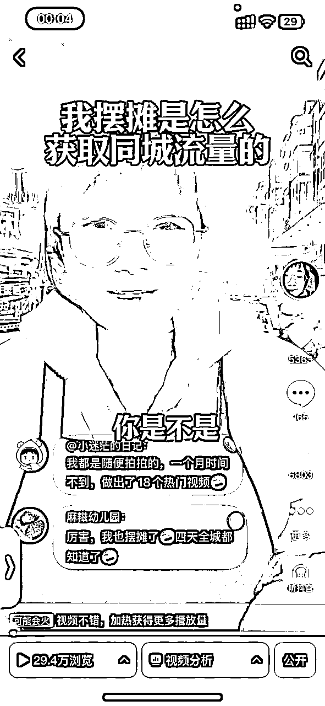
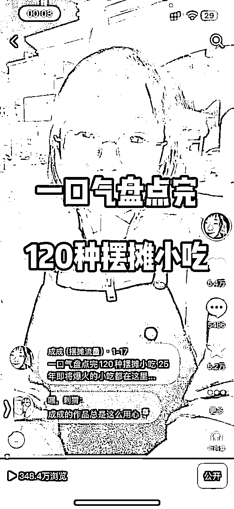
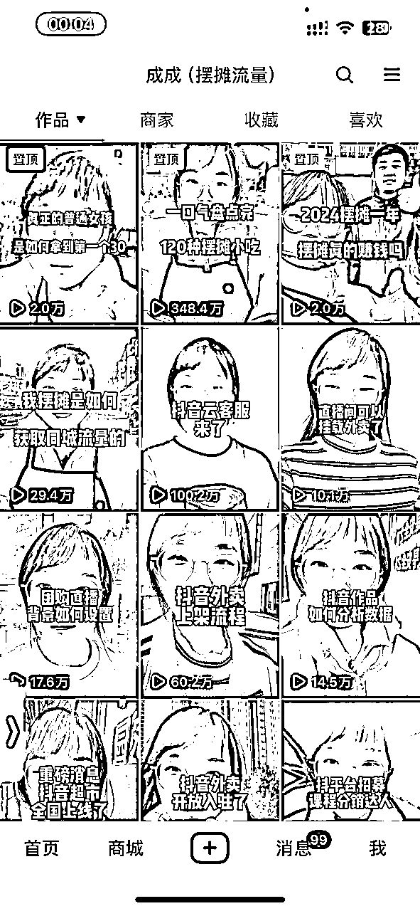
下面开始给大家分享我这两年来做摆摊自媒体的经验，也是我们团队一年业务的心血总结，希望大家打开后可以认真阅读，里面包括了我们是如何起盘一个月入十万的摆摊小吃培训项目的完整流程，也是用了文档里的这些方法，2024年我们摆摊视频抖音播放量过亿，收学员数量过千。
先说一下我们的业务模式和如何盈利，大家可能也在抖音上刷到过“宁可睡地板，也要当老板”“欢迎收看95后摆摊的一天”类似的摆摊视频，其实这些视频并不像表面那样看起来简单，背后有很大的业务和极高的利润。
这个项目最不起眼的收入，就是摆地摊卖货的利润，虽然不是特别多，但是经过我们实践下来发现，只要摊位人流量可以，一个月下来肯定是比上班强的。
这也是我们的主要收入来源，通过拍摄摆摊短视频，引流学员线上或者线下学习小吃配方。简单计算一下，如果你有一个有账号权重，视频流量都不错的摆摊账号，不说太多，一天收到一个人和你学习，假设你的配方定价2980，那么一月下来：30*2980=89400，而且目前无论是我们，还是一些同样做摆摊自媒体的同行，一天不会只收一个学员。我们24年做的提拉米苏项目，发布26个视频，盈利50w＋。
再说一点，我们很多不做自然流的同行，也会拍摄简单视频通过投流来招学员，你也可以在抖音搜索一下，小吃创业，看都有哪些账号会专门投放广告来招学员，如果没有足够大的利润，怎么会24小时广告投放，这也正说明了摆摊自媒体里巨大的变现机会。
摆摊业务天然适合做供应链，学员在你这里学到了小吃技术，就会需要摆摊的设备，材料，调料，你可以给他们提供，当然他们也可以选择去其他地方自行购买，那就会遇到货不对板，味道不对，成本还高的风险。
这里说明一下为什么摆摊学员拿我们的调味料成本会更低，举个例子，比如腌肉料，尽管学员知道调配的配方，但是仍然需要一味料一味料精准的调配，费时费力，学员只摆一个摊位，用货量少，采购成本高且不能和工厂合作（工厂定制调料有数量要求），但是当我们收到的学员数量够多，用货量大，可以合作工厂定制调料，比学员自行购买成本更低。除了调味料，也可以出售摆摊需要的各项设备，各类摆摊创业设备里也有非常大的利润。
供应链的收入短期看来比收学员赚学费收入低，但是这是一项长期且稳定的收入，只要你的学员生意稳定，能长期从你这里拿料，那就可以实现睡后收入，就算休息一段时间不工作，也有收入进账。
这也是为什么，很多摊主会打着“免费教学”的名头招收学员，就是赚后端供应链的收入。但其实，经过我们的实践发现，收学费仍然可以给学员供货，也不会吸引一批白嫖党，建议有做项目想法的团队不要做“免费教学模式”。
变现方式说完之后，我会从摆摊选品，拍摄，剪辑，同城爆摊，转化学员等多个方向去讲解，如何起盘一个月入十万的小吃培训项目。
选品是摆摊项目决定成败的关键，我们在项目操作过程中发现，目前摆摊自媒体项目中，网红品和传统品都有各自的优缺点。
目前小吃培训市场上有非常多的传统品类创新化，普通的小吃加上价格、称号就会变成一种新的小吃，而且不会流失小吃原来的受众群体。
在小吃培训项目选品中，流量是首要考虑的因素，但不是唯一需要考虑的因素，还需考虑到：
年龄层：年轻人偏爱新颖、快捷的小吃，如炸鸡、奶茶；中年人更注重健康，倾向于选择轻食、素食。
消费能力：高消费区域可选择高端小吃，如日式料理、精致甜点；低消费区域则适合价格亲民的小吃，如煎饼、烤冷面。
饮食习惯：了解当地饮食文化，选择符合口味的小吃。例如，南方偏爱甜食，北方偏爱咸鲜。
同城流量获取其实一直是不难的，我们在做小吃培训项目中，不会特意去拍同城类的视频，因为在短视频爆了全国流量之后，也包括同城流量。我们的摆摊视频爆了之后，同城的生意马上也爆了。所以如果是专业做摆摊自媒体培训的，把一个主号经营好就可以了。但是本地的一些私域运营和做活动还是非常重要的。
抖音账号：发布短视频展示摊位特色，摆摊自媒体账号流量不错的话，就不需要再另外做同城账号。
小红书种草：通过美食探店笔记，邀请本地博主或素人打卡。
微信社群：建立同城社群，定期发布优惠信息，提升用户粘性。
选址策略：选择人流量大的地段，如学校、商圈、地铁口等，确保自然流量充足。
异业合作：与周边商家合作，如奶茶店、便利店等，互相导流。例如，消费满额送摊位优惠券。
地推活动：在目标人群聚集地发放试吃品或优惠券，吸引潜在顾客到店消费。
打造招牌产品：选择一款受欢迎的产品作为爆品，吸引顾客首次消费。
套餐组合：将爆品与其他产品组合销售，提升客单价。
时段优惠：如“下午2点-4点，xx半价”，吸引非高峰时段客流。
限量抢购：每日限量推出特价产品，制造稀缺感，刺激消费。
视觉统一：设计独特的logo、包装、摊位装饰，提升摊位辨识度。
故事营销：讲述摊主背后的故事，如创业的初心、产品的独特工艺等。
打造人设：如“煎饼大叔”“奶茶小姐姐”，通过人设与顾客建立情感连接。
事件营销：参与本地公益活动，如给环卫工人送食物等。
24年、25年我们的摆摊视频爆了非常多百万和千万播放量的视频，提拉米苏项目结束之后，我们新做的品类，新项目首条作品也破了500万播放量，具体是怎么做的呢？
视频流量做好之后，我们的最终目标还是要把配方卖出去变现，朋友圈要每日更新，销售话术也非常重要，
今天的分享就到此结束了，最后想表达一下对生财的感谢，当年我入局本地生活的时候，就是从生财这里得到的信息，也因为本地生活，我进入了知识付费赛道一直到现在，生财可以说是我事业的起点，没有这个社群也没有我的今天，虽然平常发帖比较少，但一直默默地关注群里的动态。
之前我在生财里看到有人说知识付费已经衰落了，知识付费现在的情况确实不如当年，但是这个时代仍然是很适合做知识付费的，因为大家现在都习惯了用付费来换取知识。我觉得今天想要把知识付费做好，一定是选一个小类目的赛道，做到头部才有大机会。我现在选择了“摆摊自媒体”这个小众赛道，并且目标就是做到头部。也希望大家能做我成长的见证者，以后我会在生财多多分享干货，欢迎圈友来交流。